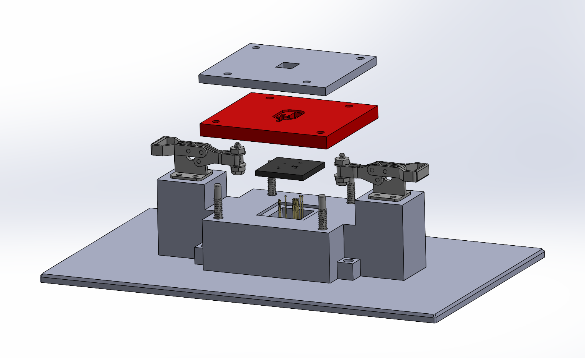
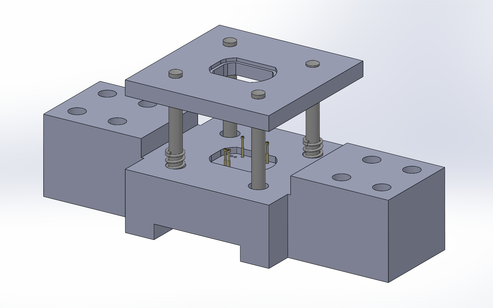
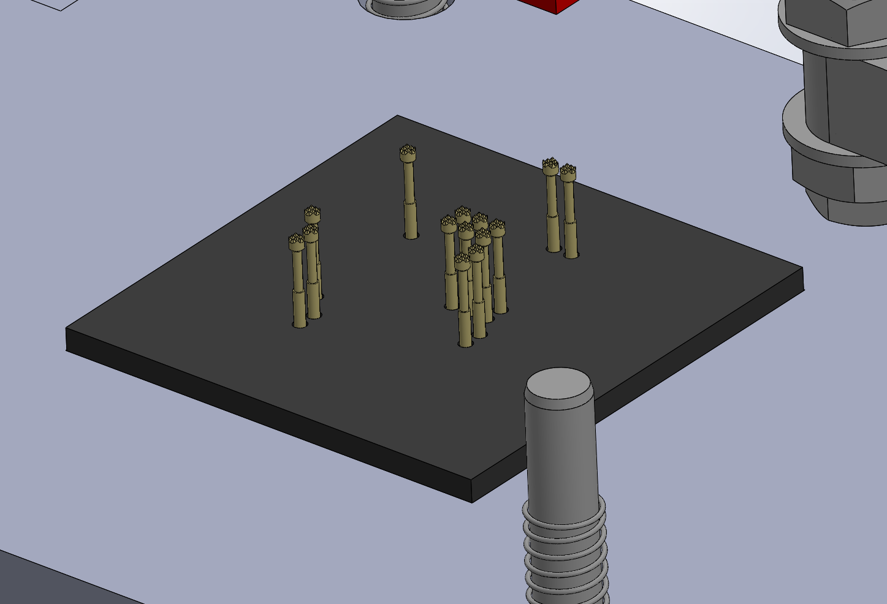
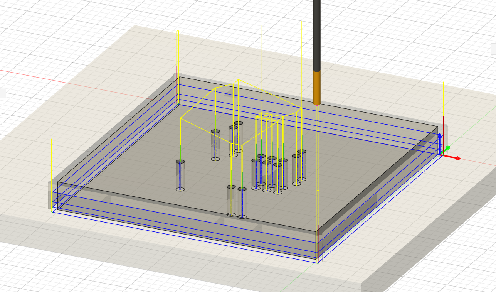
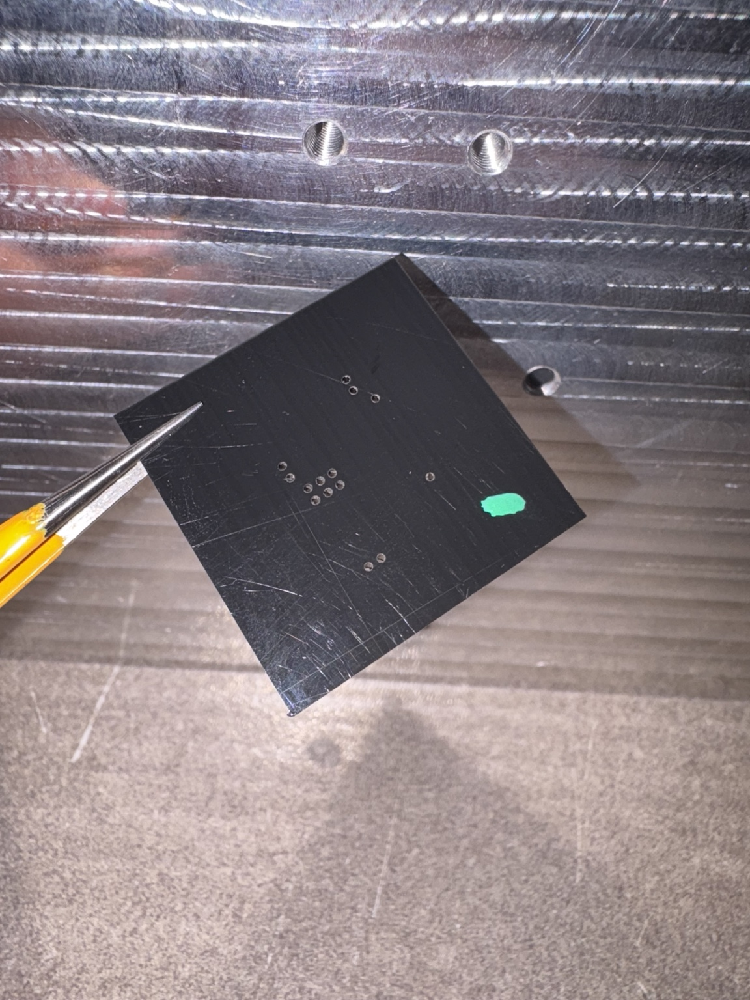
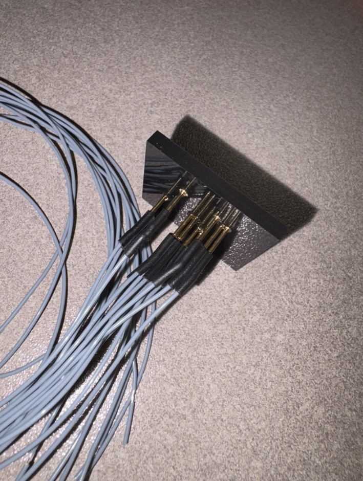
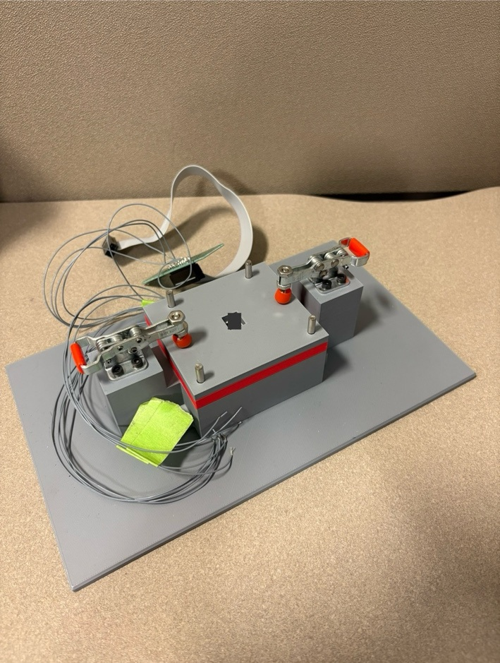

Mechanical Design • Manufacturing • Test Hardware
Compact PCB Test & Programming Fixture
Designed and built a custom fixture for accurately locating a small production PCB and reliably contacting densely spaced test points during programming and electrical testing.


01
Problem
The fixture needed to position a very small PCB repeatably while making electrical contact with a dense group of test points. Because the test points were closely spaced, small alignment errors could cause pogo pins to miss their intended pads or make inconsistent contact.
The fixture also needed to be practical to manufacture, assemble, service, and hand off to the test group for regular programming and electrical verification.
02
Initial Design
My first design located the pogo pins directly through the 3D-printed fixture structure. The concept used a spring-supported upper assembly, guide posts, and purchased toggle clamps to control motion and provide repeatable loading.
The larger fixture geometry was well suited to 3D printing, but the test-point spacing made the pogo-pin interface much more sensitive to positional error than the surrounding parts.

03
Design Revision
After reviewing the spacing and alignment requirements at the PCB interface, I revised the design so the critical pogo-pin pattern would no longer depend on FDM tolerances.
I added a separate Delrin insert for the pogo-pin pattern. This let the larger fixture components remain 3D printed while moving the most accuracy-sensitive geometry to a CNC-machined part.

04
Machining
I generated the machining operations in Fusion 360 and cut the Delrin insert on a CNC router. Using Delrin for the critical interface provided a more controlled hole pattern while still being straightforward to machine.
This manufacturing split kept the fixture fast to prototype while reserving CNC machining for the area where it added the most value.


05
Assembly
After fabricating the mechanical components, I installed the pogo-pin hardware, assembled the fixture, and soldered the wiring into the pogo-pin holders.
The completed fixture was then handed off to the test group for programming and electrical verification.


06
Result
The final fixture combined 3D-printed structural components, purchased hardware, toggle clamps, pogo pins, and a CNC-machined Delrin interface into one complete test and programming fixture.
The key design change was separating the critical pogo-pin geometry from the printed structure and manufacturing that region with a process better suited to the required positional accuracy.